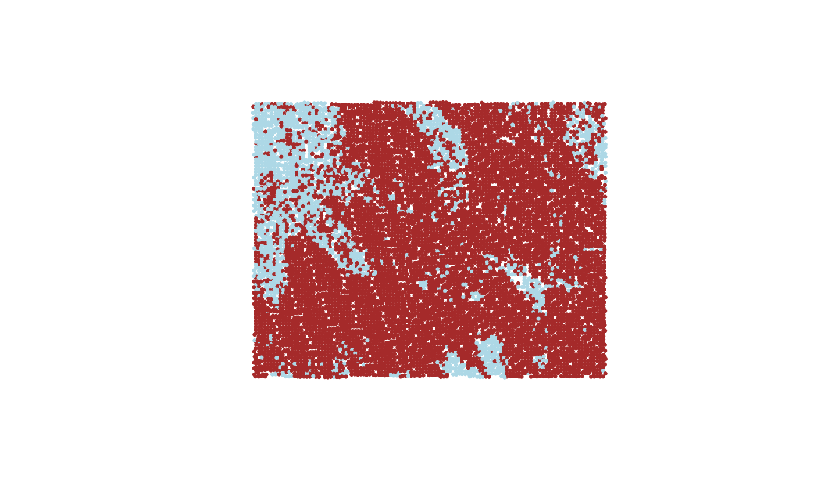
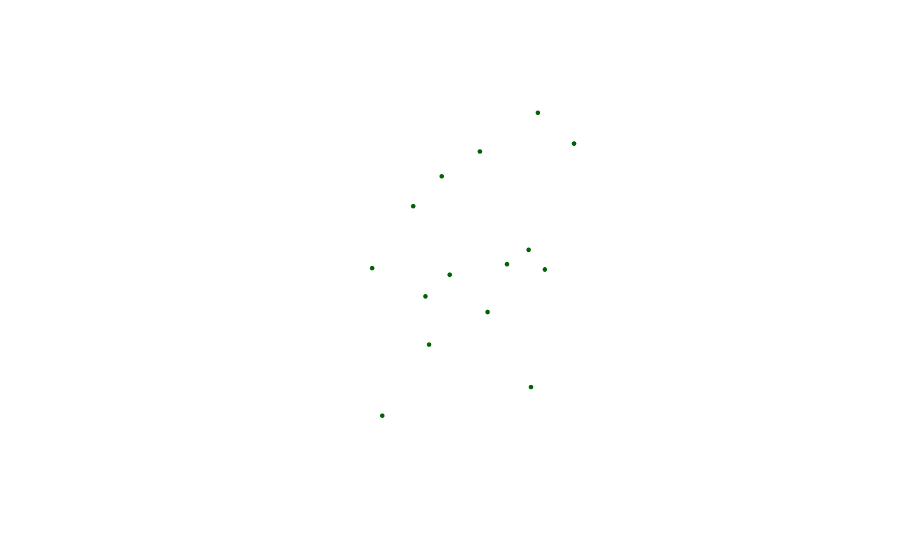

Overview of FIESTA Database (DB) tools
FIESTA’s DB tools extract data from FIA’s online publicly-available, comma-delimited files (*.csv or *.zip). FIA’s CSV files are available by state from the FIA DataMart at the following link: https://apps.fs.usda.gov/fia/datamart/datamart.html. Because of FIA’s confidentiality agreement to protect the privacy of landowners, as well as protecting the scientific integrity of FIA’s sample design, the exact coordinates of the sample plot locations are not included in the public data. If the exact coordinates are necessary for your analysis, contact FIA’s Spatial Data Services (https://www.fia.fs.fed.us/tools-data/spatial/index.php).
Objective of tutorial
The objective of this tutorial is to demonstrate the use of FIESTA’s DB tools for accessing FIA data. These tools extract data from FIA Datamart using FIA’s standard evaluations as well as customized evaluations.
An FIA Evaluation is a group of plots within the FIA database that is used for population estimates. An FIA Evaluation represents different inventory spans of data with different stratification and area adjustments for nonreponse. Each Evaluation is determined by the type of estimation (evalType) including: area and tree estimates, growth and mortality estimates, and area change estimates (evalType). These plots are identified by an evalid, which is a unique identifier in the format of a 2-digit State code, a 2-digit year code, and a 2-digit evaluation type code. For example, EVALID ‘491601’ represents the Utah 2016 evaluation for current area estimates.
| FUNCTION | DESCRIPTION |
|---|---|
| DBgetCSV() | Downloads comma-delimited file (.csv) or downloads and extracts a compressed csv file (.zip) from FIA’s online DataMart. |
| DBqryCSV() | Extracts and queries data from FIA’s online DataMart, either CSV or ZIP files. |
| DBgetEvalid() | Gets evalid for identifying an estimation group of plots for state or checks evalid. |
| DBgetXY() | Extracts XY data from FIA database. |
| DBgetPlots() | Extracts inventory plot data from FIA database. |
| DBgetStrata() | Extracts strata information and total acres by estimation unit from FIA database, including plot-level assignment and a data frame with strata weights by estimation unit. |
Set up
First, you’ll need to load the FIESTA library:
Next, you’ll need to set up an “outfolder”. This is just a file path
to a folder where you’d like FIESTA to send your data
output. For this vignette, we have saved our outfolder file path as the
outfolder object in a temporary directory. We also set a
few default options preferred for this vignette.
outfolder <- tempdir()DB Examples
The following examples show how to extract data from FIA’s publicly-available, online DataMart. Data can be returned as R objects or exported to CSV (.csv) files or a SQLite (.sqlite) database. The zip files are extracted on-the-fly from the online website. Web server connections will affect download speeds. We show examples for the following functions:
The following examples extract data from FIA’s online DataMart (https://apps.fs.usda.gov/fia/datamart/datamart.html).
Note that while datsource = 'datamart' is utilized for
these examples, datsource can be set to ‘sqlite’ with
datsource_dsn set to the local file path for the FIADB file
to achieve the same results.
DBgetCSV()
The DBgetCSV function extracts data from FIA’s
publicly-available, online DataMart CSV/ZIP files. The zip files are
extracted on-the-fly from the online website. Web server connections
will affect download speeds.
DBgetCSV()
output
## [1] 29460 63
## Get plot table for Wyoming and Utah
WYUTplots <- DBgetCSV(DBtable = "PLOT",
states = c("Wyoming", "Utah"))
table(WYUTplots$STATECD)output
##
## 49 56
## 28826 29460
## Get survey table for Wyoming
WYsurvey <- DBgetCSV("SURVEY", "Wyoming")
WYsurveyoutput
## CN INVYR P3_OZONE_IND STATECD STATEAB STATENM RSCD
## 1 40383603010690 2011 N 56 WY Wyoming 22
## 2 40383604010690 2012 N 56 WY Wyoming 22
## 3 40383605010690 2013 N 56 WY Wyoming 22
## 4 40409732010690 2014 N 56 WY Wyoming 22
## 5 40409733010690 2015 N 56 WY Wyoming 22
## 6 40409734010690 2016 N 56 WY Wyoming 22
## 7 40409735010690 2017 N 56 WY Wyoming 22
## 8 40409736010690 2018 N 56 WY Wyoming 22
## 9 40409737010690 2019 N 56 WY Wyoming 22
## 10 40409738010690 2020 N 56 WY Wyoming 22
## 11 733348634290487 2021 N 56 WY Wyoming 22
## 12 3001122010690 1984 N 56 WY Wyoming 22
## 13 2701863010690 2000 N 56 WY Wyoming 22
## ANN_INVENTORY NOTES
## 1 Y Annual 01 of 10 subcycles
## 2 Y Annual 02 of 10 subcycles
## 3 Y Annual 03 of 10 subcycles
## 4 Y Annual 04 of 10 subcycles
## 5 Y Annual 05 of 10 subcycles
## 6 Y Annual 06 of 10 subcycles
## 7 Y Annual 07 of 10 subcycles
## 8 Y Annual 08 of 10 subcycles
## 9 Y Annual 09 of 10 subcycles
## 10 Y Annual 10 of 10 subcycles
## 11 Y
## 12 N Periodic inventory FOR CYCLE=1 AND SUBCYCLE=0.
## 13 N Periodic inventory FOR CYCLE=2 AND SUBCYCLE=0.
## CREATED_DATE MODIFIED_DATE CYCLE SUBCYCLE PRJ_CN
## 1 2010-12-19 11:09:24 2021-09-02 08:12:21 3 1 833968357290487
## 2 2010-12-19 11:09:24 2021-09-02 08:12:21 3 2 833968357290487
## 3 2010-12-19 11:09:24 2021-09-02 08:12:21 3 3 833968357290487
## 4 2011-01-14 15:23:21 2021-09-02 08:12:21 3 4 833968357290487
## 5 2011-01-14 15:23:21 2021-09-02 08:12:21 3 5 833968357290487
## 6 2011-01-14 15:23:21 2021-09-02 08:12:21 3 6 833968357290487
## 7 2011-01-14 15:23:21 2021-09-02 08:12:21 3 7 833968357290487
## 8 2011-01-14 15:23:21 2021-09-02 08:12:21 3 8 833968357290487
## 9 2011-01-14 15:23:21 2021-09-02 08:12:21 3 9 833968357290487
## 10 2011-01-14 15:23:21 2021-09-02 08:12:21 3 10 833968357290487
## 11 2020-03-20 12:04:35 2021-09-02 08:12:21 4 1 833968357290487
## 12 2004-05-27 2023-07-25 06:57:43 1 0 833968358290487
## 13 2004-05-27 2023-07-25 06:57:43 2 0 833968358290487
DBqryCSV()
The DBqryCSV function queries a table from FIA’s online
publicly-available DataMart. The tables in the query must be specified
in the sqltables parameter.
DBqryCSV()
# Get number of plots by inventory year for the state of Wyoming
sql1 <- "SELECT INVYR, COUNT(*) AS NBRPLOTS
FROM PLOT
WHERE statecd = 56
GROUP BY INVYR"
nplots1 <- DBqryCSV(sql = sql1,
states = "Wyoming",
sqltables = "PLOT")
head(nplots1)output
## INVYR NBRPLOTS
## 1 1984 7724
## 2 2000 10110
## 3 2011 1060
## 4 2012 1077
## 5 2013 1013
## 6 2014 1073
# Get number of plots by inventory year for Vermont and New Hampshire
sql2 <- "SELECT STATECD, INVYR, COUNT(*) NBRPLOTS
FROM PLOT
WHERE statecd IN(50,33)
GROUP BY STATECD, INVYR"
nplots2 <- DBqryCSV(sql = sql2,
states = c("Vermont", "New Hampshire"),
sqltables = "PLOT")
head(nplots2)output
## STATECD INVYR NBRPLOTS
## 1 33 1983 697
## 2 33 1997 930
## 3 33 2002 149
## 4 33 2003 141
## 5 33 2004 144
## 6 33 2005 144
# Get number of plots by inventory year for Iowa (stcd=19) that have silver maple (SPCD=317)
sql3 <- "SELECT p.STATECD, p.INVYR, COUNT(*) NBRPLOTS
FROM PLOT p
JOIN TREE t ON p.CN = t.PLT_CN
WHERE p.statecd = 19 AND t.SPCD = 317
GROUP BY p.STATECD, p.INVYR"
nplots3 <- DBqryCSV(sql = sql3,
states = "IOWA",
sqltables = c("PLOT", "TREE"))
head(nplots3)output
## STATECD INVYR NBRPLOTS
## 1 19 1990 1698
## 2 19 1999 114
## 3 19 2000 48
## 4 19 2001 148
## 5 19 2002 236
## 6 19 2003 114
DBgetEvalid()
The DBgetEvalid function gets information for FIA
Evaluations.
Example 1: Get most current evalid and inventory years for Wyoming
View Example
WYeval <- DBgetEvalid(states = "Wyoming",
evalCur = TRUE)
names(WYeval)output
## [1] "states" "rslst" "evalidlist"
## [4] "invtype" "invyrtab" "evalTypelist"
## [7] "evalEndyrlist" "invyrs" "surveynm"
## [10] "SURVEY" "plotnm" "PLOT"
## [13] "POP_PLOT_STRATUM_ASSGN" "ppsanm" "ppsaflds"
## [16] "ppsaindb"
WYeval$evalidlistoutput
## $Wyoming
## [1] 562101
WYeval$invyrsoutput
## $Wyoming
## [1] 2012 2013 2014 2015 2016 2017 2018 2019 2020 2021
WYeval$invyrtaboutput
## STATECD INVYR NBRPLOTS
## <int> <int> <int>
## 1: 56 2011 1060
## 2: 56 2012 1077
## 3: 56 2013 1013
## 4: 56 2014 1073
## 5: 56 2015 1061
## 6: 56 2016 1067
## 7: 56 2017 1068
## 8: 56 2018 1019
## 9: 56 2019 1058
## 10: 56 2020 1072
## 11: 56 2021 1058
WYeval$invtypeoutput
## [1] "ANNUAL"Example 2: Get most current evaluations for New York for VOL and GRM evalTypes
View Example
NYeval <- DBgetEvalid(states = c("New York"),
evalType = c("VOL", "GRM"),
evalCur = TRUE)
names(NYeval)output
## [1] "states" "rslst" "evalidlist"
## [4] "invtype" "invyrtab" "evalTypelist"
## [7] "evalEndyrlist" "invyrs" "surveynm"
## [10] "SURVEY" "plotnm" "PLOT"
## [13] "POP_PLOT_STRATUM_ASSGN" "ppsanm" "ppsaflds"
## [16] "ppsaindb"
NYeval$evalidlistoutput
## $`New York`
## [1] 362201 362203
NYeval$evalTypelistoutput
## $`New York`
## [1] "EXPVOL" "EXPGROW"
DBgetXY()
The DBgetXY function queries XY public coordinate data
from FIA’ online publicly-available DataMart or SQLite database.
DBgetXY()
xydat1 <- DBgetXY(states = "Wyoming",
datsource = "datamart",
eval = "FIA",
eval_opts = eval_options(Cur = TRUE))
names(xydat1)output
## [1] "xyCur_PUBLIC" "xyqry" "xy_opts"
## [4] "pjoinid" "invyrlst" "evalInfo"
## [7] "pop_plot_stratum_assgn"
head(xydat1$xyCur_PUBLIC)output
## PLT_CN LON_PUBLIC LAT_PUBLIC STATECD UNITCD COUNTYCD PLOT
## <char> <num> <num> <int> <int> <int> <int>
## 1: 276307975489998 -105.8203 44.97642 56 3 5 90582
## 2: 282479222489998 -109.9348 44.24736 56 1 29 90583
## 3: 339004000489998 -104.3743 44.61294 56 3 11 88410
## 4: 339004001489998 -104.0644 44.12116 56 3 45 83723
## 5: 339004002489998 -104.3143 44.56942 56 3 11 89681
## 6: 339004003489998 -104.4921 44.52617 56 3 11 85577
## PLOT_ID COUNTYFIPS
## <char> <char>
## 1: PID560300590582 56005
## 2: PID560102990583 56029
## 3: PID560301188410 56011
## 4: PID560304583723 56045
## 5: PID560301189681 56011
## 6: PID560301185577 56011Example 2: Add a variable in plot table (PLOT_STATUS_CD) and output as a spatial object
View Example
xydat2 <- DBgetXY(states = "Wyoming",
datsource = "datamart",
eval = "FIA",
eval_opts = eval_options(Cur = TRUE),
pvars2keep = c("PLOT_STATUS_CD"),
issp = TRUE)
spxy2 <- xydat2$spxy
## Display points with by PLOT_STATUS_CD (1-light blue; 2-brown; 3-blue)
spxy2$color <- ifelse(spxy2$PLOT_STATUS_CD == 2, "brown",
ifelse(spxy2$PLOT_STATUS_CD == 3, "blue", "light blue"))
plot(sf::st_geometry(spxy2['PLOT_STATUS_CD']), pch = 16, cex = .5,
col = spxy2$color)plot

Example 3: Get XY data for Wyoming, inventory years 2015 to 2019
View Example
xydat3 <- DBgetXY(states = "Vermont",
datsource = "datamart",
eval = "custom",
eval_opts = eval_options(invyrs = 2017:2019),
issp = TRUE)
spxy3 <- xydat3$spxy
## Display points
plot(sf::st_geometry(spxy3), pch = 16, cex = .5, col="grey")plot
## Now only include P2 plots only (intensity1 = TRUE)
xydat3b <- DBgetXY(states = "Vermont",
datsource = "datamart",
eval = "custom",
eval_opts = eval_options(invyrs = 2017:2019),
intensity1 = TRUE,
issp = TRUE)
spxy3b <- xydat3b$spxy
## Display points
plot(sf::st_geometry(spxy3b), pch = 16, cex = .5)plot
DBgetPlots()
The DBgetPlots function extracts plot-level data from
FIA’s online DataMart or SQLite database.
DBgetPlots()
dat1 <- DBgetPlots(states = "Rhode Island",
datsource = "datamart",
eval = "FIA",
eval_opts = eval_options(Cur = TRUE,
Type = "ALL"),
issp = TRUE)output
## ================================================================================
names(dat1)output
## [1] "states" "tabs" "tabIDs"
## [4] "dbqueries" "puniqueid" "xyCur_PUBLIC"
## [7] "pop_plot_stratum_assgn" "evalid" "pltcnt"
## [10] "invyrs" "evalInfo" "ref_species"
## [13] "args"
plt1 <- dat1$tabs$plt
spxy1 <- dat1$xyCur_PUBLIC
table(plt1$INVYR)output
##
## 2016 2017 2018 2019 2020 2021 2022
## 38 40 38 36 37 41 38
# Display spatial output
plot(sf::st_geometry(spxy1), pch = 16, cex = .5)plot
# Add a filter to include only plots with Northern red oak forest type (FORTYPCD == 505)
# Note: *allFilter* filters for plots and/or conditions for all states specified.
dat1b <- DBgetPlots(states = "Rhode Island",
datsource = "datamart",
eval = "FIA",
eval_opts = eval_options(Cur = TRUE,
Type = "ALL"),
issp = TRUE,
allFilter = "FORTYPCD == 505")output
## ================================================================================
names(dat1b)output
## [1] "states" "tabs" "tabIDs"
## [4] "dbqueries" "puniqueid" "xyCur_PUBLIC"
## [7] "pop_plot_stratum_assgn" "evalid" "pltcnt"
## [10] "invyrs" "evalInfo" "ref_species"
## [13] "args"
spxy1b <- dat1b$xyCur_PUBLIC
dim(spxy1b)output
## [1] 15 14
# Display spatial output
plot(sf::st_geometry(spxy1b), pch = 16, cex = .5, col="darkgreen")plot

Example 3: Get data for Delaware, most current FIA Evaluation, include plotgeom data and subplot tables
View Example
dat2 <- DBgetPlots(states = "Delaware",
datsource = "datamart",
eval = "FIA",
eval_opts = eval_options(Cur = TRUE,
Type = "ALL"),
issubp = TRUE,
addplotgeom = TRUE)output
## ================================================================================
names(dat2)output
## [1] "states" "tabs" "tabIDs"
## [4] "dbqueries" "puniqueid" "pop_plot_stratum_assgn"
## [7] "evalid" "pltcnt" "invyrs"
## [10] "evalInfo" "ref_species" "args"
tabs2 <- dat2$tabs
plt2 <- tabs2$plt
## subplot and subp_cond tables are added to tabs list
names(tabs2)output
## [1] "tree" "subplot" "subp_cond" "plt" "cond"
## PLOTGEOM data are appended to plt table (e.g., ALP_ADFORCD, FVS_VARIANT)
head(plt2)output
## CN PREV_PLT_CN INVYR STATECD CYCLE SUBCYCLE UNITCD COUNTYCD
## 1 304032774489998 168931271010661 2016 10 7 3 1 5
## 2 304032775489998 168931275010661 2016 10 7 3 1 5
## 3 304032776489998 168931267010661 2016 10 7 3 1 5
## 4 304032777489998 168931259010661 2016 10 7 3 1 5
## 5 304032778489998 168931263010661 2016 10 7 3 1 3
## 6 304032779489998 168931247010661 2016 10 7 3 1 3
## PLOT PLOT_STATUS_CD PLOT_NONSAMPLE_REASN_CD SAMP_METHOD_CD SUBP_EXAMINE_CD
## 1 595 3 2 1 4
## 2 334 1 NA 1 4
## 3 617 2 NA 2 4
## 4 410 3 2 1 4
## 5 598 2 NA 2 4
## 6 19 2 NA 2 4
## MANUAL MACRO_BREAKPOINT_DIA INTENSITY MEASYEAR MEASMON MEASDAY REMPER KINDCD
## 1 7 NA 1 2017 2 3 NA 1
## 2 7 NA 1 2016 11 1 6.6 2
## 3 7 NA 1 2016 6 1 6.0 2
## 4 7 NA 1 2017 3 1 6.8 2
## 5 7 NA 1 2016 6 1 6.0 2
## 6 7 NA 1 2016 6 1 6.0 2
## DESIGNCD RDDISTCD WATERCD LON_PUBLIC LAT_PUBLIC ELEV_PUBLIC GROW_TYP_CD
## 1 1 NA NA -75.42634 38.76185 40 NA
## 2 1 2 0 -75.66730 38.60185 20 2
## 3 1 NA NA -75.19065 38.59463 10 2
## 4 1 NA NA -75.30461 38.63188 20 2
## 5 1 NA NA -75.76654 39.62781 90 2
## 6 1 NA NA -75.52052 39.75933 50 2
## MORT_TYP_CD P2PANEL P3PANEL SUBPANEL DECLINATION NF_PLOT_STATUS_CD
## 1 NA 2 NA 0 NA NA
## 2 2 2 NA 0 NA NA
## 3 2 2 NA 0 NA NA
## 4 2 2 NA 0 NA NA
## 5 2 2 NA 0 NA NA
## 6 2 2 NA 0 NA NA
## NF_PLOT_NONSAMPLE_REASN_CD NF_SAMPLING_STATUS_CD P2VEG_SAMPLING_STATUS_CD
## 1 NA 0 0
## 2 NA 0 0
## 3 NA NA 0
## 4 NA 0 0
## 5 NA NA 0
## 6 NA NA 0
## P2VEG_SAMPLING_LEVEL_DETAIL_CD INVASIVE_SAMPLING_STATUS_CD
## 1 NA 0
## 2 NA 0
## 3 NA 0
## 4 NA 0
## 5 NA 0
## 6 NA 0
## INVASIVE_SPECIMEN_RULE_CD DESIGNCD_P2A QA_STATUS MODIFIED_DATE CONGCD
## 1 NA NA 1 2024-10-21 11:07:27 1000
## 2 NA NA 1 2024-10-21 11:07:27 1000
## 3 NA NA 1 2024-10-21 11:07:27 1000
## 4 NA NA 1 2024-10-21 11:07:27 1000
## 5 NA NA 1 2024-10-21 11:05:53 1000
## 6 NA NA 1 2024-10-21 11:05:53 1000
## ECOSUBCD HUC EMAP_HEX ALP_ADFORCD FVS_VARIANT FVS_LOC_CD FVS_REGION
## 1 232Hd 2080109 1720 NA NE 921 9
## 2 232Hd 2080109 1721 NA NE 921 9
## 3 232Hc 2040303 1608 NA NE 921 9
## 4 232Hc 2040303 1608 NA NE 921 9
## 5 232Hd 2040205 2061 NA NE 921 9
## 6 232Ad 2040205 1945 NA NE 921 9
## FVS_FOREST FVS_DISTRICT ROADLESSCD NBRCND NBRCNDSAMP NBRCNDFOR NBRCNDFTYP
## 1 21 NA NA 1 0 0 0
## 2 21 NA NA 2 2 1 1
## 3 21 NA NA 1 1 0 0
## 4 21 NA NA 1 0 0 0
## 5 21 NA NA 1 1 0 0
## 6 21 NA NA 1 1 0 0
## CCLIVEPLT FORNONSAMP PLOT_ID
## 1 90.0 Nonsampled-Denied access PID100100500595
## 2 57.8 Sampled-Forest PID100100500334
## 3 3.0 Sampled-Nonforest PID100100500617
## 4 95.0 Nonsampled-Denied access PID100100500410
## 5 11.0 Sampled-Nonforest PID100100300598
## 6 7.0 Sampled-Nonforest PID100100300019Example 3: Get data for Delaware, most current FIA Evaluation, include pop tables
View Example
dat3 <- DBgetPlots(states = "Delaware",
datsource = "datamart",
eval = "FIA",
eval_opts = eval_options(Cur = TRUE,
Type = "ALL"),
savePOP = TRUE,
othertables = c("POP_STRATUM", "POP_ESTN_UNIT"))output
## ================================================================================
## savePOP = TRUE, saves the POP_PLOT_STRATUM_ASSGN table used to select plots
names(dat3)output
## [1] "states" "tabs" "tabIDs"
## [4] "dbqueries" "puniqueid" "pop_plot_stratum_assgn"
## [7] "pop_stratum" "pop_estn_unit" "evalid"
## [10] "pltcnt" "invyrs" "evalInfo"
## [13] "ref_species" "args"
## pop_stratum and pop_estn_unit tables are added to tabs list
tabs3 <- dat3$tabs
names(tabs3)output
## [1] "tree" "pop_stratum" "pop_estn_unit" "plt"
## [5] "cond"Example 4: Export plot-level data to a CSV file
View Example
DBgetPlots(states = "Rhode Island",
datsource = "datamart",
eval = "FIA",
eval_opts = eval_options(Cur = TRUE,
Type = "ALL"),
returndata = FALSE,
savedata = TRUE,
savedata_opts = savedata_options(outfolder = outfolder,
out_fmt = "csv",
overwrite_layer = TRUE))output
## ================================================================================output
## $dbqueries
## $dbqueries$`Rhode Island`
## $dbqueries$`Rhode Island`$pltcond
## [1] "select p.CN, p.PREV_PLT_CN, p.INVYR, p.STATECD, p.CYCLE, p.SUBCYCLE, p.UNITCD, p.COUNTYCD, p.PLOT, p.PLOT_STATUS_CD, p.PLOT_NONSAMPLE_REASN_CD, p.SAMP_METHOD_CD, p.SUBP_EXAMINE_CD, p.MANUAL, p.MACRO_BREAKPOINT_DIA, p.INTENSITY, p.MEASYEAR, p.MEASMON, p.MEASDAY, p.REMPER, p.KINDCD, p.DESIGNCD, p.RDDISTCD, p.WATERCD, p.LON, p.LAT, p.ELEV, p.GROW_TYP_CD, p.MORT_TYP_CD, p.P2PANEL, p.P3PANEL, p.SUBPANEL, p.DECLINATION, p.NF_PLOT_STATUS_CD, p.NF_PLOT_NONSAMPLE_REASN_CD, p.NF_SAMPLING_STATUS_CD, p.P2VEG_SAMPLING_STATUS_CD, p.P2VEG_SAMPLING_LEVEL_DETAIL_CD, p.INVASIVE_SAMPLING_STATUS_CD, p.INVASIVE_SPECIMEN_RULE_CD, p.DESIGNCD_P2A, p.QA_STATUS, p.MODIFIED_DATE, c.PLT_CN, c.CONDID, c.COND_STATUS_CD, c.COND_NONSAMPLE_REASN_CD, c.RESERVCD, c.OWNCD, c.OWNGRPCD, c.ADFORCD, c.FORTYPCD, c.FLDTYPCD, c.MAPDEN, c.STDAGE, c.STDSZCD, c.FLDSZCD, c.SITECLCD, c.SICOND, c.SIBASE, c.SISP, c.STDORGCD, c.STDORGSP, c.PROP_BASIS, c.CONDPROP_UNADJ, c.MICRPROP_UNADJ, c.SUBPPROP_UNADJ, c.MACRPROP_UNADJ, c.SLOPE, c.ASPECT, c.PHYSCLCD, c.GSSTKCD, c.ALSTKCD, c.DSTRBCD1, c.DSTRBYR1, c.DSTRBCD2, c.DSTRBYR2, c.DSTRBCD3, c.DSTRBYR3, c.TRTCD1, c.TRTYR1, c.TRTCD2, c.TRTYR2, c.TRTCD3, c.TRTYR3, c.PRESNFCD, c.BALIVE, c.FLDAGE, c.FORTYPCDCALC, c.HABTYPCD1, c.HABTYPCD2, c.LIVE_CANOPY_CVR_PCT, c.LIVE_MISSING_CANOPY_CVR_PCT, c.CANOPY_CVR_SAMPLE_METHOD_CD, c.CARBON_DOWN_DEAD, c.CARBON_LITTER, c.CARBON_SOIL_ORG, c.CARBON_UNDERSTORY_AG, c.CARBON_UNDERSTORY_BG, c.NF_COND_STATUS_CD, c.NF_COND_NONSAMPLE_REASN_CD, c.LAND_COVER_CLASS_CD \nfrom POP_PLOT_STRATUM_ASSGN ppsa\nJOIN PLOT p ON (p.CN = ppsa.PLT_CN) \nJOIN COND c ON (c.PLT_CN = p.CN) \nwhere ppsa.EVALID IN(442200)"
##
## $dbqueries$`Rhode Island`$tree
## [1] "SELECT DISTINCT t.CN, t.PLT_CN, t.PREV_TRE_CN, t.SUBP, t.TREE, t.CONDID, t.STATUSCD, t.SPCD, t.SPGRPCD, t.DIA, t.HT, t.ACTUALHT, t.HTCD, t.TREECLCD, t.CR, t.CCLCD, t.AGENTCD, t.CULL, t.DECAYCD, t.STOCKING, t.WDLDSTEM, t.MORTYR, t.UNCRCD, t.BHAGE, t.TOTAGE, t.MORTCD, t.MIST_CL_CD, t.STANDING_DEAD_CD, t.PREV_STATUS_CD, t.PREV_WDLDSTEM, t.RECONCILECD, t.PREVDIA, t.VOLCFGRS, t.VOLCFGRS_BARK, t.VOLCFGRS_STUMP, t.VOLCFGRS_STUMP_BARK, t.VOLCFGRS_TOP, t.VOLCFGRS_TOP_BARK, t.VOLCFNET, t.VOLCFNET_BARK, t.VOLCFSND, t.VOLCFSND_BARK, t.VOLCFSND_STUMP, t.VOLCFSND_STUMP_BARK, t.VOLCFSND_TOP, t.VOLCFSND_TOP_BARK, t.VOLCSGRS, t.VOLCSGRS_BARK, t.VOLCSNET, t.VOLCSNET_BARK, t.VOLCSSND, t.VOLCSSND_BARK, t.VOLTSGRS, t.VOLTSGRS_BARK, t.VOLTSSND, t.VOLTSSND_BARK, t.VOLBFGRS, t.VOLBFNET, t.VOLBSGRS, t.VOLBSNET, t.TPA_UNADJ, t.DRYBIO_AG, t.DRYBIO_BG, t.DRYBIO_BOLE, t.DRYBIO_BOLE_BARK, t.DRYBIO_BRANCH, t.DRYBIO_FOLIAGE, t.DRYBIO_SAWLOG, t.DRYBIO_SAWLOG_BARK, t.DRYBIO_STEM, t.DRYBIO_STEM_BARK, t.DRYBIO_STUMP, t.DRYBIO_STUMP_BARK, t.CARBON_BG, t.CARBON_AG\nFROM POP_PLOT_STRATUM_ASSGN ppsa\nJOIN PLOT p ON (p.CN = ppsa.PLT_CN)\nJOIN TREE t ON (t.PLT_CN = p.CN)\nWHERE ppsa.EVALID IN(442200)"
##
##
##
## $pltcnt
## STABBR STATECD INVYR PLOT_STATUS NBRPLTS
## 1 RI 44 2016 Nonsampled 4
## 2 RI 44 2016 Sampled-Forest 18
## 3 RI 44 2016 Sampled-Nonforest 16
## 4 Subtotal 38
## 41 RI 44 2017 Nonsampled 9
## 5 RI 44 2017 Sampled-Forest 18
## 6 RI 44 2017 Sampled-Nonforest 13
## 8 Subtotal 40
## 7 RI 44 2018 Nonsampled 3
## 81 RI 44 2018 Sampled-Forest 21
## 9 RI 44 2018 Sampled-Nonforest 14
## 12 Subtotal 38
## 10 RI 44 2019 Nonsampled 4
## 11 RI 44 2019 Sampled-Forest 17
## 121 RI 44 2019 Sampled-Nonforest 15
## 16 Subtotal 36
## 13 RI 44 2020 Nonsampled 4
## 14 RI 44 2020 Sampled-Forest 21
## 15 RI 44 2020 Sampled-Nonforest 12
## 20 Subtotal 37
## 161 RI 44 2021 Nonsampled 9
## 17 RI 44 2021 Sampled-Forest 12
## 18 RI 44 2021 Sampled-Nonforest 20
## 24 Subtotal 41
## 19 RI 44 2022 Nonsampled 2
## 201 RI 44 2022 Sampled-Forest 22
## 21 RI 44 2022 Sampled-Nonforest 14
## 28 Subtotal 38
## 29 Total 268
## Read in data from outfolder
plt <- read.csv(file.path(outfolder, "plot.csv"), stringsAsFactors=FALSE)
head(plt)output
## CN PREV_PLT_CN INVYR STATECD CYCLE SUBCYCLE UNITCD COUNTYCD PLOT
## 1 3.0523e+14 1.689988e+14 2016 44 7 4 1 7 343
## 2 3.0523e+14 2.213545e+14 2016 44 7 4 1 9 68
## 3 3.0523e+14 1.689988e+14 2016 44 7 4 1 7 119
## 4 3.0523e+14 1.689987e+14 2016 44 7 4 1 7 62
## 5 3.0523e+14 1.689988e+14 2016 44 7 4 1 9 342
## 6 3.0523e+14 1.689988e+14 2016 44 7 4 1 5 319
## PLOT_STATUS_CD PLOT_NONSAMPLE_REASN_CD SAMP_METHOD_CD SUBP_EXAMINE_CD MANUAL
## 1 2 NA 2 4 7
## 2 3 2 1 4 7
## 3 1 NA 1 4 7
## 4 1 NA 1 4 7
## 5 1 NA 1 4 7
## 6 2 NA 2 4 7
## MACRO_BREAKPOINT_DIA INTENSITY MEASYEAR MEASMON MEASDAY REMPER KINDCD
## 1 NA 1 2016 6 1 6.0 2
## 2 NA 1 2016 5 13 NA 1
## 3 NA 1 2016 6 22 5.4 2
## 4 NA 1 2016 7 20 5.9 2
## 5 NA 1 2016 6 14 5.8 2
## 6 NA 1 2016 6 1 6.0 2
## DESIGNCD RDDISTCD WATERCD LON_PUBLIC LAT_PUBLIC ELEV_PUBLIC GROW_TYP_CD
## 1 1 NA NA -71.34652 41.77542 30 2
## 2 1 NA NA -71.51607 41.49760 250 NA
## 3 1 2 0 -71.38642 41.97530 140 2
## 4 1 1 0 -71.49510 41.84011 190 2
## 5 1 5 2 -71.46445 41.60411 80 2
## 6 1 NA NA -71.36327 41.53429 0 2
## MORT_TYP_CD P2PANEL P3PANEL SUBPANEL DECLINATION NF_PLOT_STATUS_CD
## 1 2 2 NA 0 NA NA
## 2 NA 3 3 0 NA NA
## 3 2 2 NA 0 NA NA
## 4 2 2 NA 0 NA NA
## 5 2 2 NA 0 NA NA
## 6 2 2 NA 0 NA NA
## NF_PLOT_NONSAMPLE_REASN_CD NF_SAMPLING_STATUS_CD P2VEG_SAMPLING_STATUS_CD
## 1 NA NA 0
## 2 NA 0 1
## 3 NA 0 0
## 4 NA 0 0
## 5 NA 0 0
## 6 NA NA 0
## P2VEG_SAMPLING_LEVEL_DETAIL_CD INVASIVE_SAMPLING_STATUS_CD
## 1 NA 0
## 2 1 1
## 3 NA 0
## 4 NA 0
## 5 NA 0
## 6 NA 0
## INVASIVE_SPECIMEN_RULE_CD DESIGNCD_P2A QA_STATUS MODIFIED_DATE NBRCND
## 1 NA NA 1 2024-05-23 08:40:14 1
## 2 1 NA 1 2024-05-23 08:40:53 1
## 3 NA NA 1 2024-05-23 08:40:14 2
## 4 NA NA 1 2024-05-23 08:40:14 2
## 5 NA NA 1 2024-05-23 08:40:53 1
## 6 NA NA 1 2024-05-23 08:39:34 1
## NBRCNDSAMP NBRCNDFOR NBRCNDFTYP CCLIVEPLT FORNONSAMP
## 1 1 0 0 27.00 Sampled-Nonforest
## 2 0 0 0 85.00 Nonsampled-Denied access
## 3 2 1 1 51.33 Sampled-Forest
## 4 2 1 1 21.25 Sampled-Forest
## 5 1 1 1 96.00 Sampled-Forest
## 6 1 0 0 0.00 Sampled-Nonforest
## PLOT_ID
## 1 PID440100700343
## 2 PID440100900068
## 3 PID440100700119
## 4 PID440100700062
## 5 PID440100900342
## 6 PID440100500319Example 5: Most current evaluation for multiple evalTypes (‘ALL’, ‘VOL’, ‘GRM’)
View Example
dat5 <- DBgetPlots(states = "Rhode Island",
datsource = "datamart",
eval = "FIA",
eval_opts = eval_options(Cur = TRUE,
Type = c("VOL", "CHNG", "P2VEG")))output
## ================================================================================output
##
## ## STATUS: GETTING PLOT/COND CHANGE DATA ( RI ) ...
names(dat5)output
## [1] "states" "tabs" "tabIDs"
## [4] "dbqueries" "puniqueid" "pop_plot_stratum_assgn"
## [7] "evalid" "pltcnt" "invyrs"
## [10] "evalInfo" "ref_species" "args"
tabs5 <- dat5$tabs
names(tabs5)output
## [1] "pltu" "condu" "subp_cond_chng_mtrx"
## [4] "tree" "p2veg_subp_structure" "subplot"
## [7] "subp_cond" "plt" "cond"
ppsa5 <- dat5$pop_plot_stratum_assgn
table(ppsa5$EVALID)output
##
## 442201 442203 442210
## 234 207 15Example 6: Get data for a set of evalids
View Example
dat6 <- DBgetPlots(eval = "FIA",
eval_opts = eval_options(Cur = TRUE,
evalid = c(101800, 101801, 101803)))output
## ================================================================================
names(dat6)output
## [1] "states" "tabs" "tabIDs"
## [4] "dbqueries" "puniqueid" "pop_plot_stratum_assgn"
## [7] "evalid" "pltcnt" "invyrs"
## [10] "evalInfo" "ref_species" "args"
tabs6 <- dat6$tabs
names(tabs6)output
## [1] "tree" "plt" "cond"
ppsa6 <- dat6$pop_plot_stratum_assgn
table(ppsa6$EVALID)output
##
## 101800 101801 101803
## 436 397 374Example 7: Get data by Endyr
View Example
dat7 <- DBgetPlots(states = c("Connecticut"),
eval = "FIA",
eval_opts = eval_options(evalType = "ALL",
Endyr = 2017))output
## ================================================================================
names(dat7)output
## [1] "states" "tabs" "tabIDs"
## [4] "dbqueries" "puniqueid" "pop_plot_stratum_assgn"
## [7] "evalid" "pltcnt" "invyrs"
## [10] "evalInfo" "ref_species" "args"
tabs7 <- dat7$tabs
names(tabs7)output
## [1] "tree" "plt" "cond"
ppsa7 <- dat7$pop_plot_stratum_assgn
table(ppsa7$EVALID)output
##
## 91700
## 537Example 8: Get data for multiple inventory years
View Example
dat8 <- DBgetPlots(states = "Vermont",
eval = "custom",
eval_opts = eval_options(invyrs = 2012:2014,
evalType = "ALL"))output
## ================================================================================
names(dat8)output
## [1] "states" "tabs" "tabIDs" "dbqueries" "puniqueid" "pltcnt"
## [7] "invyrs" "evalInfo" "args"
tabs8 <- dat8$tabs
names(tabs8)output
## [1] "tree" "plt" "cond"
plt8 <- tabs8$plt
table(plt8$INVYR)output
##
## 2012 2013 2014
## 240 239 167Example 9: Get data for periodic inventory
View Example
dat9 <- DBgetPlots(states = "Wyoming",
invtype = "PERIODIC",
eval = "FIA",
eval_opts = list(Cur = TRUE,
evalType = "VOL"))output
## ================================================================================
names(dat9)output
## [1] "states" "tabs" "tabIDs"
## [4] "dbqueries" "puniqueid" "pop_plot_stratum_assgn"
## [7] "evalid" "pltcnt" "invyrs"
## [10] "evalInfo" "ref_species" "args"
tabs9 <- dat9$tabs
names(tabs9)output
## [1] "tree" "plt" "cond"
plt9 <- tabs9$plt
table(plt9$STATECD, plt9$INVYR)output
##
## 2000
## 56 9956Example 10: Intensity
View Example
The objective of this section is to understand the differences when using INTENSITY=1.
## With only P2 plots (intensity1 = TRUE)
dat10 <- DBgetPlots(states = "Vermont",
eval = "FIA",
eval_opts = list(Cur = TRUE,
Type = "ALL"),
intensity1 = TRUE,
issp = TRUE)output
## ================================================================================
tabs10 <- dat10$tabs
plt10 <- tabs10$plt
table(plt10$INVYR)output
##
## 2016 2017 2018 2019 2020 2021 2022
## 147 150 140 155 148 146 151
spxy10 <- dat10$xyCur_PUBLIC
# Display spatial output of public coordinates
plot(sf::st_geometry(spxy10), pch = 16, cex = .5)plot
DBgetStrata()
The DBgetStrata function queries the FIA database for
post-stratification information.
DBgetStrata()
strat1 <- DBgetStrata(states = "Wyoming",
eval_opts = eval_options(Cur = TRUE))
names(strat1)output
## [1] "unitarea" "unitvar" "unitvar2" "areavar" "stratalut"
## [6] "strvar" "getwt" "getwtvar" "evalid" "pltassgn"
## [11] "pltassgnid"
## Look at plot assign data
pltassgn1 <- strat1$pltassgn
head(pltassgn1)output
## PLT_CN UNITCD STATECD INVYR ESTN_UNIT COUNTYCD STRATUMCD EVALID
## 1 276307975489998 3 56 2014 5 5 5 562101
## 2 282479222489998 1 56 2013 29 29 12 562101
## 3 339004000489998 3 56 2015 11 11 1 562101
## 4 339004001489998 3 56 2015 45 45 5 562101
## 5 339004002489998 3 56 2016 11 11 2 562101
## 6 339004003489998 3 56 2016 11 11 1 562101
unique(pltassgn1$EVALID)output
## [1] 562101
strat1$evalid output
## $Wyoming
## [1] 562101
## Look at area data for estimation unit
strat1$unitareaoutput
## STATECD ESTN_UNIT ESTN_UNIT_DESCR ACRES EVALID
## 1 56 1 County 001 2757613 562101
## 2 56 3 County 003 2021729 562101
## 3 56 5 County 005 3072988 562101
## 4 56 7 County 007 5096959 562101
## 5 56 9 County 009 2729653 562101
## 6 56 11 County 011 1837124 562101
## 7 56 13 County 013 5930088 562101
## 8 56 15 County 015 1428579 562101
## 9 56 17 County 017 1283969 562101
## 10 56 19 County 019 2671802 562101
## 11 56 21 County 021 1720074 562101
## 12 56 23 County 023 2616954 562101
## 13 56 25 County 025 3440445 562101
## 14 56 27 County 027 1681849 562101
## 15 56 29 County 029 4459826 562101
## 16 56 31 County 031 1350969 562101
## 17 56 33 County 033 1617318 562101
## 18 56 35 County 035 3158807 562101
## 19 56 37 County 037 6714319 562101
## 20 56 39 County 039 2701941 562101
## 21 56 41 County 041 1336034 562101
## 22 56 43 County 043 1435352 562101
## 23 56 45 County 045 1536038 562101
strat1$unitvaroutput
## [1] "ESTN_UNIT"
strat1$unitvar2output
## [1] "STATECD"
strat1$areavaroutput
## [1] "ACRES"
## Look at stratification data for estimation unit
strat1$stratalutoutput
## STATECD ESTN_UNIT STRATUMCD STRATUM_DESCR P2POINTCNT
## 1 56 1 1 High tree cover/Nonprivate 34
## 2 56 1 3 Low tree cover/Nonprivate 22
## 3 56 1 24 Tree cover/Private 14
## 4 56 1 58 Nontree/Nonprivate/Nonvisit 101
## 5 56 1 59 Nontree/Nonprivate/Visit 21
## 6 56 1 68 Nontree/Private/Nonvisit 241
## 7 56 1 69 Nontree/Private/Visit 12
## 8 56 3 5 Nontree/Nonprivate 239
## 9 56 3 6 Nontree/Private 65
## 10 56 3 1234 Tree cover 36
## 11 56 5 5 Nontree/Nonprivate 80
## 12 56 5 68 Nontree/Private/Nonvisit 373
## 13 56 5 69 Nontree/Private/Visit 17
## 14 56 5 1234 Tree cover 23
## 15 56 7 1 High tree cover/Nonprivate 88
## 16 56 7 3 Low tree cover/Nonprivate 34
## 17 56 7 5 Nontree/Nonprivate 391
## 18 56 7 2468 Private/Nonvisit 308
## 19 56 7 2469 Private/Visit 17
## 20 56 9 12 High tree cover 11
## 21 56 9 34 Low tree cover 21
## 22 56 9 58 Nontree/Nonprivate/Nonvisit 75
## 23 56 9 59 Nontree/Nonprivate/Visit 12
## 24 56 9 68 Nontree/Private/Nonvisit 307
## 25 56 9 69 Nontree/Private/Visit 13
## 26 56 11 1 High tree cover/Nonprivate 27
## 27 56 11 2 High tree cover/Private 25
## 28 56 11 5 Nontree/Nonprivate 28
## 29 56 11 34 Low tree cover 14
## 30 56 11 68 Nontree/Private/Nonvisit 154
## 31 56 11 69 Nontree/Private/Visit 35
## 32 56 13 1 High tree cover/Nonprivate 48
## 33 56 13 2 High tree cover/Private 11
## 34 56 13 3 Low tree cover/Nonprivate 40
## 35 56 13 4 Low tree cover/Private 23
## 36 56 13 5 Nontree/Nonprivate 488
## 37 56 13 6 Nontree/Private 388
## 38 56 15 5 Nontree/Nonprivate 12
## 39 56 15 246 Private 223
## 40 56 17 58 Nontree/Nonprivate/Nonvisit 80
## 41 56 17 59 Nontree/Nonprivate/Visit 12
## 42 56 17 68 Nontree/Private/Nonvisit 78
## 43 56 17 69 Nontree/Private/Visit 16
## 44 56 17 1234 Tree cover 19
## 45 56 19 1 High tree cover/Nonprivate 43
## 46 56 19 3 Low tree cover/Nonprivate 11
## 47 56 19 5 Nontree/Nonprivate 133
## 48 56 19 2468 Private/Nonvisit 234
## 49 56 19 2469 Private/Visit 15
## 50 56 21 5 Nontree/Nonprivate 26
## 51 56 21 246 Private 257
## 52 56 23 3 Low tree cover/Nonprivate 44
## 53 56 23 5 Nontree/Nonprivate 213
## 54 56 23 12 High tree cover 73
## 55 56 23 46 Sparse cover/Private 91
## 56 56 25 6 Nontree/Private 241
## 57 56 25 58 Nontree/Nonprivate/Nonvisit 278
## 58 56 25 59 Nontree/Nonprivate/Visit 15
## 59 56 25 1234 Tree cover 24
## 60 56 27 77778 All strata combined/Nonvisit 270
## 61 56 27 77779 All strata combined/Visit 10
## 62 56 29 12 High tree cover 150
## 63 56 29 34 Low tree cover 59
## 64 56 29 58 Nontree/Nonprivate/Nonvisit 238
## 65 56 29 59 Nontree/Nonprivate/Visit 153
## 66 56 29 68 Nontree/Private/Nonvisit 107
## 67 56 29 69 Nontree/Private/Visit 11
## 68 56 31 6 Nontree/Private 154
## 69 56 31 24 Tree cover/Private 13
## 70 56 31 135 Nonprivate 48
## 71 56 33 5 Nontree/Nonprivate 49
## 72 56 33 13 Tree cover/Nonprivate 51
## 73 56 33 2468 Private/Nonvisit 158
## 74 56 33 2469 Private/Visit 13
## 75 56 35 5 Nontree/Nonprivate 338
## 76 56 35 6 Nontree/Private 86
## 77 56 35 12 High tree cover 59
## 78 56 35 34 Low tree cover 42
## 79 56 37 5 Nontree/Nonprivate 830
## 80 56 37 13 Tree cover/Nonprivate 24
## 81 56 37 468 Sparse cover/Private/Nonvisit 280
## 82 56 37 469 Sparse cover/Private/Visit 13
## 83 56 39 12 High tree cover 206
## 84 56 39 34 Low tree cover 53
## 85 56 39 56 Nontree 191
## 86 56 41 5 Nontree/Nonprivate 81
## 87 56 41 6 Nontree/Private 106
## 88 56 41 13 Tree cover/Nonprivate 15
## 89 56 41 24 Tree cover/Private 14
## 90 56 43 5 Nontree/Nonprivate 154
## 91 56 43 6 Nontree/Private 43
## 92 56 43 1234 Tree cover 18
## 93 56 45 5 Nontree/Nonprivate 77
## 94 56 45 68 Nontree/Private/Nonvisit 147
## 95 56 45 69 Nontree/Private/Visit 10
## 96 56 45 1234 Tree cover 15
## P1POINTCNT EVALID
## 1 188590 562101
## 2 146522 562101
## 3 151175 562101
## 4 505654 562101
## 5 115149 562101
## 6 1553813 562101
## 7 96710 562101
## 8 1443670 562101
## 9 341138 562101
## 10 236921 562101
## 11 503496 562101
## 12 2241815 562101
## 13 150256 562101
## 14 177421 562101
## 15 506170 562101
## 16 231874 562101
## 17 2378302 562101
## 18 1768200 562101
## 19 212414 562101
## 20 96531 562101
## 21 146977 562101
## 22 471919 562101
## 23 81799 562101
## 24 1808705 562101
## 25 123722 562101
## 26 152938 562101
## 27 175525 562101
## 28 214428 562101
## 29 113296 562101
## 30 913891 562101
## 31 267046 562101
## 32 318910 562101
## 33 82123 562101
## 34 231650 562101
## 35 135426 562101
## 36 3012392 562101
## 37 2149587 562101
## 38 119982 562101
## 39 1308597 562101
## 40 484299 562101
## 41 78699 562101
## 42 486406 562101
## 43 106012 562101
## 44 128554 562101
## 45 260186 562101
## 46 61413 562101
## 47 754577 562101
## 48 1436063 562101
## 49 159563 562101
## 50 193675 562101
## 51 1526399 562101
## 52 212274 562101
## 53 1397220 562101
## 54 442756 562101
## 55 564704 562101
## 56 1501487 562101
## 57 1652947 562101
## 58 101079 562101
## 59 184932 562101
## 60 1576733 562101
## 61 105116 562101
## 62 904426 562101
## 63 463514 562101
## 64 1400259 562101
## 65 982534 562101
## 66 621910 562101
## 67 87184 562101
## 68 967486 562101
## 69 63565 562101
## 70 319918 562101
## 71 283337 562101
## 72 288794 562101
## 73 938293 562101
## 74 106894 562101
## 75 1966626 562101
## 76 546626 562101
## 77 387966 562101
## 78 257589 562101
## 79 4791364 562101
## 80 137281 562101
## 81 1689151 562101
## 82 96523 562101
## 83 1206959 562101
## 84 321491 562101
## 85 1173491 562101
## 86 487514 562101
## 87 658296 562101
## 88 87804 562101
## 89 102420 562101
## 90 988708 562101
## 91 313616 562101
## 92 133028 562101
## 93 394484 562101
## 94 948094 562101
## 95 83845 562101
## 96 109615 562101
strat1$strvaroutput
## [1] "STRATUMCD"
strat1$getwtvaroutput
## [1] "P1POINTCNT"Example 2: Get strata information for a specific evaluation for Wyoming
View Example
strat2 <- DBgetStrata(eval_opts = eval_options(evalid = 561200))
unique(strat2$pltassgn$EVALID)output
## [1] 561200
strat2$evalid output
## $Wyoming
## [1] 561200Example 3: Get strata information for Wyoming, evaluation ending in 2014
View Example
strat3 <- DBgetStrata(states = "Wyoming",
eval_opts = eval_options(Endyr = 2014))
unique(strat3$pltassgn$EVALID)output
## [1] 561401
strat3$evalid output
## $Wyoming
## [1] 561401